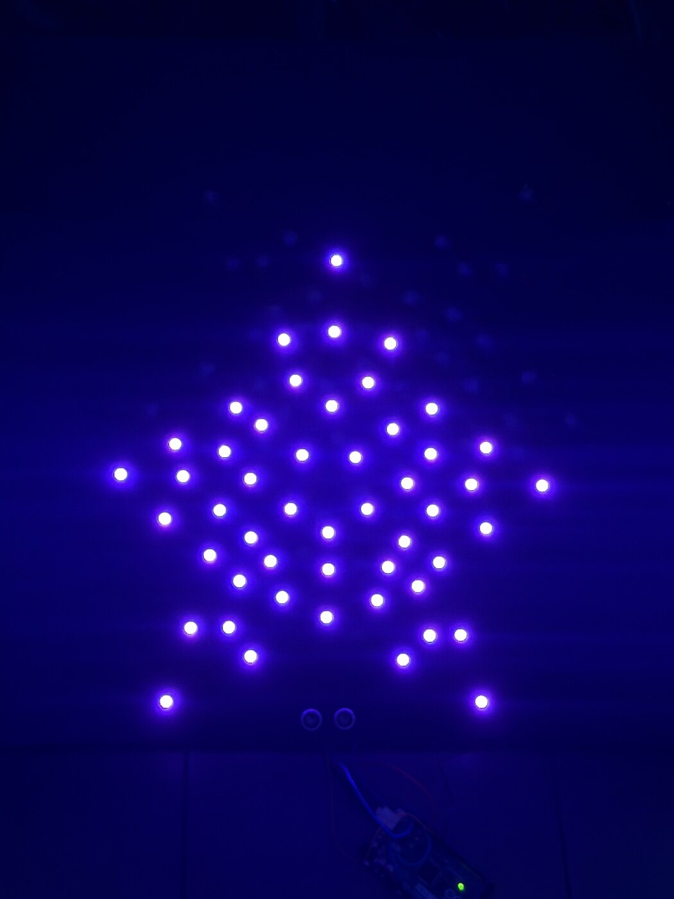

I am a Communication student with a strong interest in digital media, visual design, sound, and creative storytelling. I enjoy using different forms of media to explore ideas about identity, technology, environments, and the ways people experience and interpret the world around them. My work allows me to combine communication with creativity, whether I am developing visual concepts, experimenting with AI-generated imagery, or creating music and sound. I am especially interested in projects that feel personal, engaging, and visually memorable. As I continue building my skills, I hope to keep experimenting with new forms of digital media and create work that communicates ideas in ways that are both creative and meaningful.
2046 Alternate Future
AI Generation | 2026 | independent | Lucin Arezouyan
A speculative future environment.
2046 an Alternative Future explores a design inspired by dwindling resources and the repurposing of technology. AI
generation was used to combine multiple environmental and cultural images, exploring different textures and
structures to create a new environment.
Who Am I?
AI Generation | 2024 | independent | Lucin Arezouyan
A potential movie poster idea exploring how images, memories and personal experiences affect perception.
Who Am I? follows the main character, Maya, through a world where everyone sees her differently based on their
relationship with her and their perception of one another. As these different perceptions begin to affect her, Maya
spirals down a path that leads her to question who she really is.
Elevator/Hold Music
Audio | 2026 | independent | Lucin Arezouyan
A musical piece inspired by hold/elevator music.
A repetitive beat made to emulate the calm feeling of elevator and hold music. Devoid of lyrics, the piece focuses
on creating a simple and relaxing beat that listeners can enjoy.
Expanding Star
Interactive Media | 2026 | independent | Lucin Arezouyan

An interactive light sculpture that changes scale and color based on viewer distance.
Expanding Star is an interactive light sculpture that uses viewer distance to control changes in illuminated scale and color. An ultrasonic sensor and Arduino Mega 2560 control 50 addressable LEDs arranged into three nested star states.